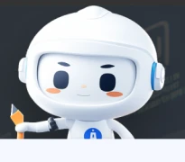
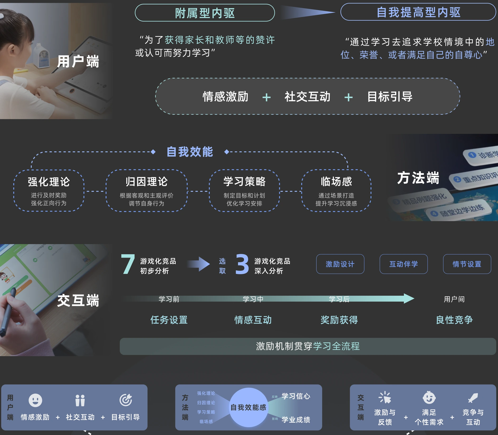
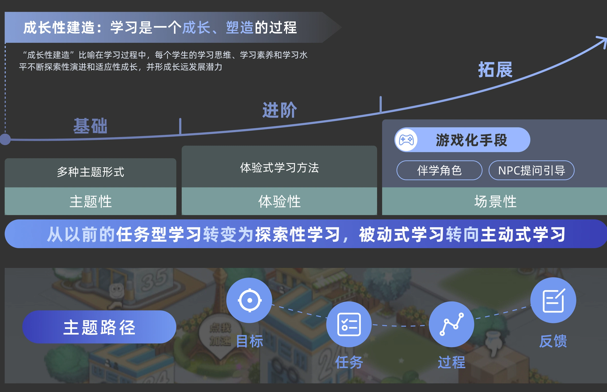
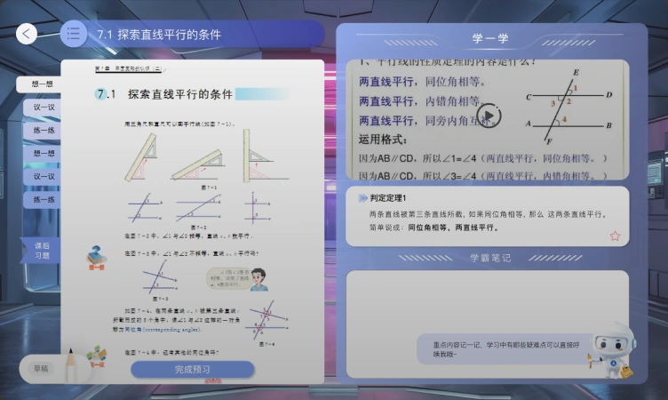
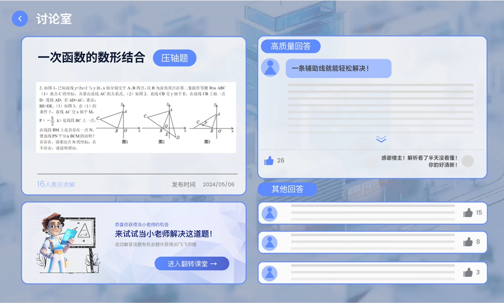

科大讯飞 · 学习产品
把学习动机做进产品体验
将学生的学习动机与使用阻力转化为成长反馈和游戏化激励。
项目交付 50+ 个界面与高保真原型。

科大讯飞 AI 精准学 · 伴学互动
做题卡住时，学生怎样向小飞求助？


小飞遗忘知识点了吗？
学生卡在哪里？
题目已给出 EF ∥ AD，学生却说不出两个角为什么相等。点题目右边的小飞，就能从这一步求助。
让学生自己说出疑问
原稿把主动求助做成一个圆角对话框。题目留在背景，学生可以把问题说得比「我不会」更具体。
给一条线索，留一步给学生
小飞把注意力引回题目给出的平行线。学生可以回去推导，也可以针对同一步追问。
把提示缩小到图上的两个位置
第二个提示指出 E 和 A，请学生比较角的位置。何时结束对话，交给学生决定。
接着刚才的推导往下做
对话收起后，仍是原来的几何题。学生可以沿 BA 对照两个角，补上等式的理由。
设计取舍
原方案只有部分题目提供固定提示。伴学入口让学生在需要时主动提问；原稿也另外设计了侦测到长时间停滞时的邀请，学生可选择继续思考。
如何走查
给学生同一道题，观察他能否自己找到求助入口、问出卡住的那一步，并在关闭对话后接着推导。三个动作可分开记录。
设计思路
学生做完一个任务后，怎样看懂自己取得的进展，并知道下一步做什么？
- 整理动机和阻力回看访谈与竞品学习路径
- 明确反馈节点用目标、任务、过程和反馈组织体验
- 做成可讨论的原型把成长主题与学习反馈落到具体界面
从访谈收敛学习问题
作为校企合作项目的核心成员，我参与 20+ 场用户访谈和 15+ 个竞品流程拆解。梳理持续学习的动机与阻力后，我把案例聚焦到任务过程中的反馈：学生能否理解自己的进展，以及完成后还有没有明确的下一步。
找到学生想学与学不下去的原因
团队结合访谈、文献和竞品拆解。动力调研先看 7 个游戏化产品，再深入 3 个；阻力分析则把原产品与 5 个核心竞品放到“选、诊、学、练”流程中，并归类 20 多场访谈的重点。


把研究发现落到学习路径
| 调研发现 | 设计推导 | 界面落点 |
|---|---|---|
| 学习入口少、层级多，原有“选、诊、学、练”路径不够灵活。 | 按预热、预习、复习安排场景，在各阶段融入适合的诊断、学习或练习。 | 用新的学习流程图检查任务与阶段切换。 |
| 学习引导不足，激励方式单一，学生需要更清楚的目标和过程反馈。 | 共创把主题路径拆成目标、任务、过程、反馈四个节点。 | 用成长进度呈现积累成果，伴学角色和奖励放在学习过程中。 |
把反馈放进学习路径
我主导跨职能工作坊，把研究发现放到「目标、任务、过程、反馈」四个节点讨论。成长主题用来呈现累积进度，奖励和数字陪伴对应任务过程中的反馈。
- 界面需要回答什么
- 学生看完反馈后，应能说出自己已经完成什么、当前处于哪个阶段，以及接下来能做什么。



原型交付
我参与交付了 50 多个界面及高保真原型。这六张原稿沿着学生的任务排列，从辨认概念、阅读课本，到把自己的思路讲给别人听。






学习进度与排行榜